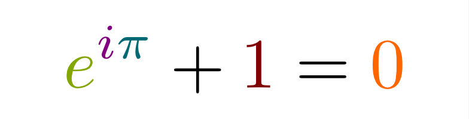

<!DOCTYPE html>
<html lang="ru" dir="auto" data-theme="auto">

<head><meta charset="utf-8">
<meta http-equiv="X-UA-Compatible" content="IE=edge">
<meta name="viewport" content="width=device-width, initial-scale=1, shrink-to-fit=no">
<meta name="robots" content="index, follow">
<title>Самая красивая теорема математики: тождество Эйлера | NoteSphere</title>
<meta name="keywords" content="habr, тождество Эйлера, математика">
<meta name="description" content="

&#x1f517; источник">
<meta name="author" content="">
<link rel="canonical" href="https://mcfev.github.io/NoteSphere/posts/eulers_identity/">
<link crossorigin="anonymous" href="/NoteSphere/assets/css/stylesheet.506025c7470c810038ec2336e67be190e406658e2984a7b99cf7ffac1e9e4334.css" integrity="sha256-UGAlx0cMgQA47CM25nvhkOQGZY4phKe5nPf/rB6eQzQ=" rel="preload stylesheet" as="style">
<link rel="icon" href="https://mcfev.github.io/NoteSphere/favicon.ico">
<link rel="icon" type="image/png" sizes="16x16" href="https://mcfev.github.io/NoteSphere/favicon-16x16.png">
<link rel="icon" type="image/png" sizes="32x32" href="https://mcfev.github.io/NoteSphere/favicon-32x32.png">
<link rel="apple-touch-icon" href="https://mcfev.github.io/NoteSphere/apple-touch-icon.png">
<link rel="mask-icon" href="https://mcfev.github.io/NoteSphere/safari-pinned-tab.svg">
<meta name="theme-color" content="#2e2e33">
<meta name="msapplication-TileColor" content="#2e2e33">
<link rel="alternate" hreflang="ru" href="https://mcfev.github.io/NoteSphere/posts/eulers_identity/">
<noscript>
    <style>
        #theme-toggle,
        .top-link {
            display: none;
        }

    </style>
    <style>
        @media (prefers-color-scheme: dark) {
            :root {
                --theme: rgb(29, 30, 32);
                --entry: rgb(46, 46, 51);
                --primary: rgb(218, 218, 219);
                --secondary: rgb(155, 156, 157);
                --tertiary: rgb(65, 66, 68);
                --content: rgb(196, 196, 197);
                --code-block-bg: rgb(46, 46, 51);
                --code-bg: rgb(55, 56, 62);
                --border: rgb(51, 51, 51);
                color-scheme: dark;
            }

            .list {
                background: var(--theme);
            }

            .toc {
                background: var(--entry);
            }
        }

    </style>
</noscript>
<script>
    if (localStorage.getItem("pref-theme") === "dark") {
        document.querySelector("html").dataset.theme = 'dark';
    } else if (localStorage.getItem("pref-theme") === "light") {
       document.querySelector("html").dataset.theme = 'light';
    } else if (window.matchMedia('(prefers-color-scheme: dark)').matches) {
        document.querySelector("html").dataset.theme = 'dark';
    } else {
        document.querySelector("html").dataset.theme = 'light';
    }

</script><meta property="og:url" content="https://mcfev.github.io/NoteSphere/posts/eulers_identity/">
  <meta property="og:site_name" content="NoteSphere">
  <meta property="og:title" content="Самая красивая теорема математики: тождество Эйлера">
  <meta property="og:description" content="🔗 источник">
  <meta property="og:locale" content="ru_RU">
  <meta property="og:type" content="article">
    <meta property="article:section" content="posts">
    <meta property="article:published_time" content="2019-07-02T00:00:00+03:00">
    <meta property="article:modified_time" content="2019-07-02T00:00:00+03:00">
    <meta property="article:tag" content="Habr">
    <meta property="article:tag" content="Тождество Эйлера">
    <meta property="article:tag" content="Математика">

  <meta name="twitter:card" content="summary">
  <meta name="twitter:title" content="Самая красивая теорема математики: тождество Эйлера">
  <meta name="twitter:description" content="🔗 источник">


<script type="application/ld+json">
{
  "@context": "https://schema.org",
  "@type": "BreadcrumbList",
  "itemListElement": [
    {
      "@type": "ListItem",
      "position":  1 ,
      "name": "Posts",
      "item": "https://mcfev.github.io/NoteSphere/posts/"
    }, 
    {
      "@type": "ListItem",
      "position":  2 ,
      "name": "Самая красивая теорема математики: тождество Эйлера",
      "item": "https://mcfev.github.io/NoteSphere/posts/eulers_identity/"
    }
  ]
}
</script>
<script type="application/ld+json">
{
  "@context": "https://schema.org",
  "@type": "BlogPosting",
  "headline": "Самая красивая теорема математики: тождество Эйлера",
  "name": "Самая красивая теорема математики: тождество Эйлера",
  "description": "\n\u0026#x1f517; источник\n",
  "keywords": [
    "habr", "тождество Эйлера", "математика"
  ],
  "articleBody": "\n🔗 источник\n",
  "wordCount" : "2",
  "inLanguage": "ru",
  "datePublished": "2019-07-02T00:00:00+03:00",
  "dateModified": "2019-07-02T00:00:00+03:00",
  "mainEntityOfPage": {
    "@type": "WebPage",
    "@id": "https://mcfev.github.io/NoteSphere/posts/eulers_identity/"
  },
  "publisher": {
    "@type": "Organization",
    "name": "NoteSphere",
    "logo": {
      "@type": "ImageObject",
      "url": "https://mcfev.github.io/NoteSphere/favicon.ico"
    }
  }
}
</script>
</head>
<body id="top">
    <header class="header">
    <nav class="header-nav">
        <div class="logo">
            <a href="https://mcfev.github.io/NoteSphere/" accesskey="h" title="NoteSphere (Alt + H)">NoteSphere</a>
            <div class="logo-switches">
                <button id="theme-toggle" class="theme-toggle" accesskey="t" title="(Alt + T)" aria-label="Toggle theme">
                    <svg class="moon" xmlns="http://www.w3.org/2000/svg" width="17" height="17" viewBox="0 0 24 24"
                        fill="none" stroke="currentColor" stroke-width="2" stroke-linecap="round"
                        stroke-linejoin="round">
                        <path d="M21 12.79A9 9 0 1 1 11.21 3 7 7 0 0 0 21 12.79z"></path>
                    </svg>
                    <svg class="sun" xmlns="http://www.w3.org/2000/svg" width="17" height="17" viewBox="0 0 24 24"
                        fill="none" stroke="currentColor" stroke-width="2" stroke-linecap="round"
                        stroke-linejoin="round">
                        <circle cx="12" cy="12" r="5"></circle>
                        <line x1="12" y1="1" x2="12" y2="3"></line>
                        <line x1="12" y1="21" x2="12" y2="23"></line>
                        <line x1="4.22" y1="4.22" x2="5.64" y2="5.64"></line>
                        <line x1="18.36" y1="18.36" x2="19.78" y2="19.78"></line>
                        <line x1="1" y1="12" x2="3" y2="12"></line>
                        <line x1="21" y1="12" x2="23" y2="12"></line>
                        <line x1="4.22" y1="19.78" x2="5.64" y2="18.36"></line>
                        <line x1="18.36" y1="5.64" x2="19.78" y2="4.22"></line>
                    </svg>
                </button>
            </div>
        </div>
        <ul id="menu" class="menu">
            <li>
                <a href="https://mcfev.github.io/NoteSphere/categories/" title="categories">
                    <span>categories</span>
                </a>
            </li>
            <li>
                <a href="https://mcfev.github.io/NoteSphere/tags/" title="tags">
                    <span>tags</span>
                </a>
            </li>
        </ul>
    </nav>
</header>
<main class="main">

<article class="post-single">
  <header class="post-header">
    
    <h1 class="post-title entry-hint-parent">
      Самая красивая теорема математики: тождество Эйлера
    </h1>
    <div class="post-meta">

<span title='2019-07-02 00:00:00 +0300 MSK'>2 июля 2019 г.</span>

</div>
  </header> 
  <div class="post-content md-content"><p></p>
<hr>
<p><a href="https://habr.com/ru/post/454136/">&#x1f517; источник</a></p>


  </div>

  <footer class="post-footer">
    <ul class="post-tags">
      <li><a href="https://mcfev.github.io/NoteSphere/tags/habr/">Habr</a></li>
      <li><a href="https://mcfev.github.io/NoteSphere/tags/%D1%82%D0%BE%D0%B6%D0%B4%D0%B5%D1%81%D1%82%D0%B2%D0%BE-%D1%8D%D0%B9%D0%BB%D0%B5%D1%80%D0%B0/">Тождество Эйлера</a></li>
      <li><a href="https://mcfev.github.io/NoteSphere/tags/%D0%BC%D0%B0%D1%82%D0%B5%D0%BC%D0%B0%D1%82%D0%B8%D0%BA%D0%B0/">Математика</a></li>
    </ul>
  </footer>
</article>
    </main>
    
<footer class="footer">
        <span>&copy; 2026 <a href="https://mcfev.github.io/NoteSphere/">NoteSphere</a></span> · 

    
    
    <span>
        Powered by
        <a href="https://gohugo.io/?utm_source=papermod" rel="noopener" target="_blank">Hugo</a> &
        <a href="https://github.com/adityatelange/hugo-PaperMod/" rel="noopener" target="_blank">PaperMod</a>
    </span>
</footer>
<a href="#top" id="top-link" class="top-link hidden" aria-label="go to top" title="Go to Top (Alt + G)" accesskey="g">
    <svg xmlns="http://www.w3.org/2000/svg" viewBox="0 0 24 24" fill="none" stroke="currentColor" stroke-width="2"
        stroke-linecap="round" stroke-linejoin="round" class="feather feather-chevrons-up">
        <polyline points="17 11 12 6 7 11"></polyline>
        <polyline points="17 18 12 13 7 18"></polyline>
    </svg>
</a>

<script>
    let menu = document.getElementById('menu');
    if (menu) {
        
        const scrollPosition = localStorage.getItem("menu-scroll-position");
        if (scrollPosition) {
            menu.scrollLeft = parseInt(scrollPosition, 10);
        }
        
        menu.onscroll = function () {
            localStorage.setItem("menu-scroll-position", menu.scrollLeft);
        }
    }

    document.querySelectorAll('a[href^="#"]').forEach(anchor => {
        anchor.addEventListener("click", function (e) {
            e.preventDefault();
            var id = this.getAttribute("href").substr(1);
            if (!window.matchMedia('(prefers-reduced-motion: reduce)').matches) {
                document.querySelector(`[id='${decodeURIComponent(id)}']`).scrollIntoView({
                    behavior: "smooth"
                });
            } else {
                document.querySelector(`[id='${decodeURIComponent(id)}']`).scrollIntoView();
            }
            if (id === "top") {
                history.replaceState(null, null, " ");
            } else {
                history.pushState(null, null, `#${id}`);
            }
        });
    });

</script>
<script>
    var toplink = document.getElementById("top-link");
    window.onscroll = function () {
        const scrollThreshold = window.innerHeight;
        if (document.body.scrollTop > scrollThreshold || document.documentElement.scrollTop > scrollThreshold) {
            toplink.classList.remove("hidden");
        } else {
            toplink.classList.add("hidden");
        }
    };

</script>
<script>
    document.getElementById("theme-toggle").addEventListener("click", () => {
        const html = document.querySelector("html");
        if (html.dataset.theme === "dark") {
            html.dataset.theme = 'light';
            localStorage.setItem("pref-theme", 'light');
        } else {
            html.dataset.theme = 'dark';
            localStorage.setItem("pref-theme", 'dark');
        }
    })

</script>
</body>

</html>
